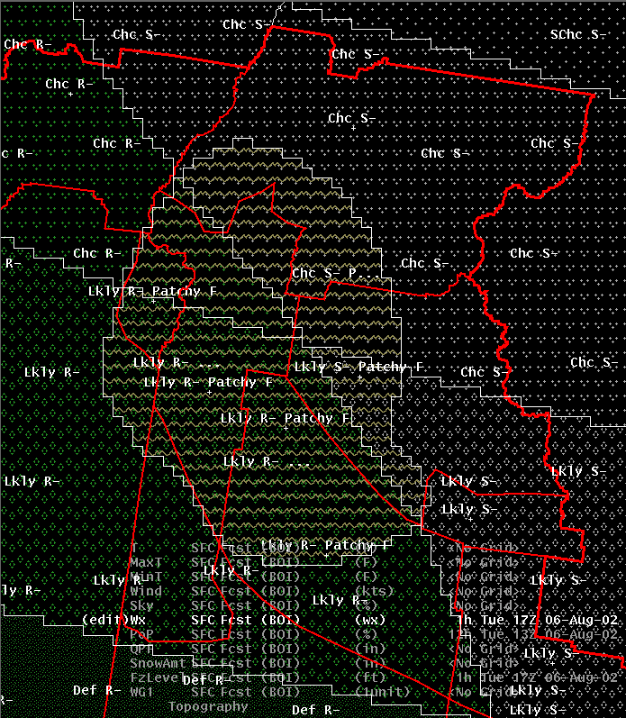
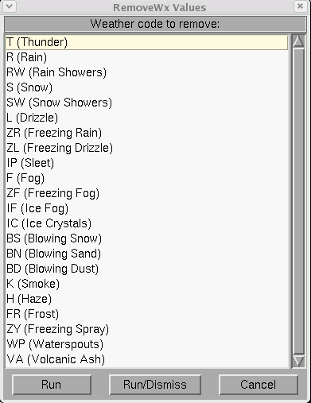
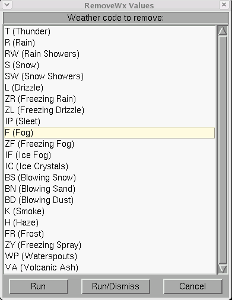
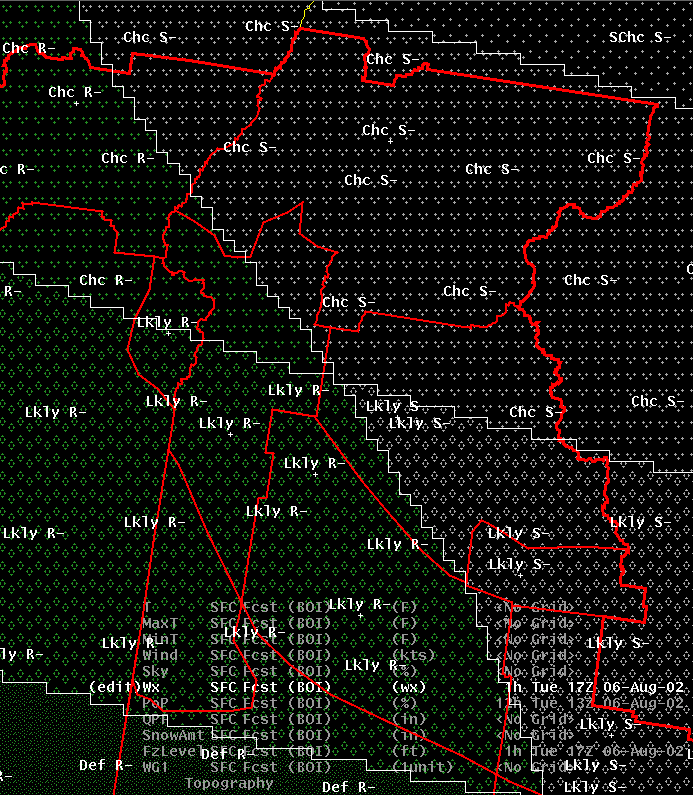
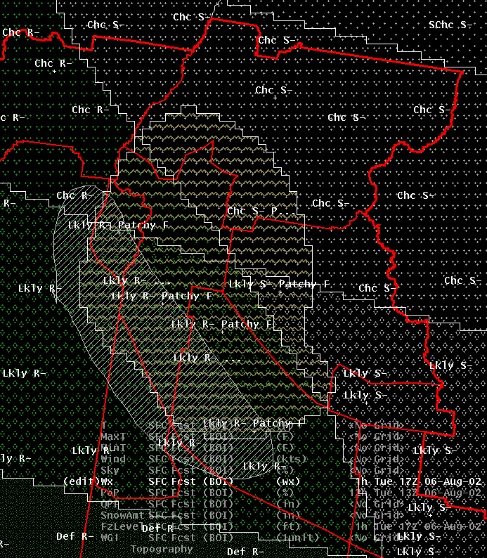
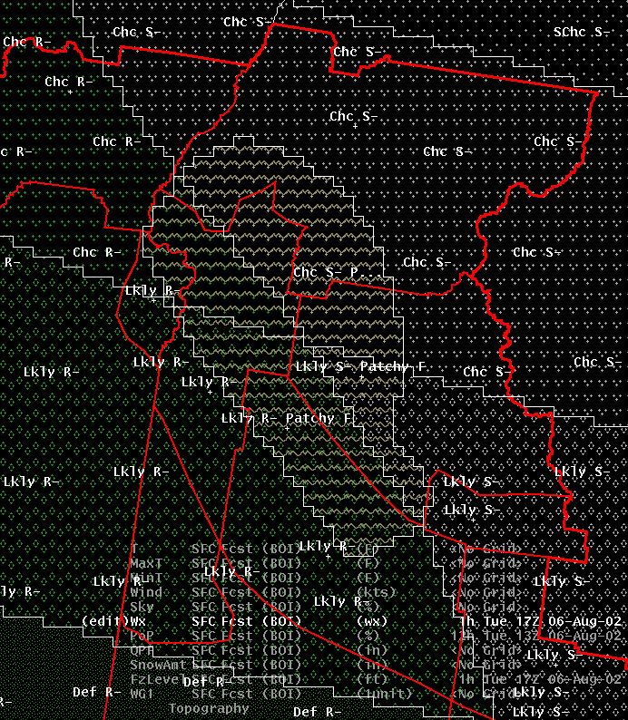

RemoveWx
Introduction
Sometimes you have complex combinations
of weather and you want to remove just one of the “pieces” of weather. It is difficult to do using
the standard Assign_Value dialog for weather, without messing up other weather combinations, or
having to do the operation multiple times for each different combination of weather. The RemoveWx
tool makes it easy to remove a particular weather string from any area of weather.
How
the Procedure Works
Lets say we have a complex combination
of rain/snow (with different probability values) and we have patchy fog combined with both of these
weather types:

Now, lets say that we want to remove
the fog. If we do a query to find all the pixels that contain fog, we cannot simply set the
values to rain, because we have the fog combined with rain in some areas and snow in others
(not to mention that we have it combined with ‘chance rain/snow’ in some areas and ‘likely
rain/snow’ in others). If we use the ‘select homogeneous area’ tool we will have to do this
several times to find all the areas of fog combined with other things. When we start the RemoveWx
tool, it presents a dialog where we specify which weather we want to remove:

We just need to select F for Fog:

Then run the tool, and all mention of
Fog is removed, while preserving all the other weather combinations:

The tool also works if you specify an edit area, so that, for example, you could remove fog from
only some areas, while leaving it in others. Say, for example, that you define an edit area like
this:

And then remove the fog. The result is:

There are many cases where you want to do this sort of editing operation: removing thunderstorms from
an area of showers, removing freezing rain from an area of rain, etc.